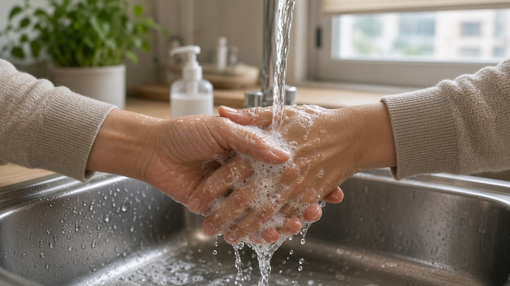
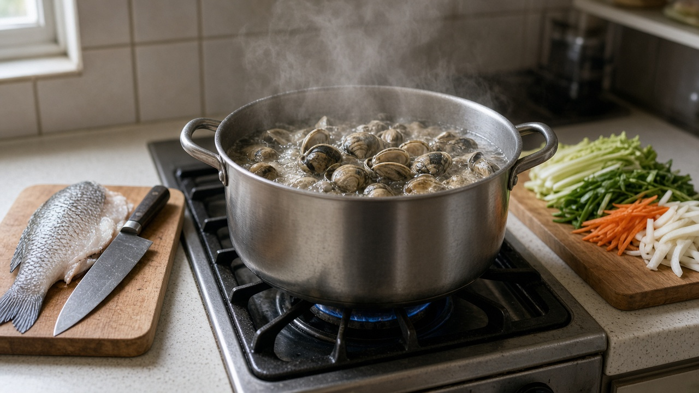

콜레라 국내 감염 추정 환자 10년 만에 창원에서 확인, 복통 없는 쌀뜨물 설사가 이어질 때 알아 둘 점
콜레라라고 하면 먼 나라 이야기나 옛날 병처럼 느껴지는 분들이 많을 거예요.
그런데 질병관리청이 11월 20일, 해외여행을 다녀오지 않은 사람에게서 콜레라가 확인됐다고 발표했어요.
국내에서 감염된 것으로 추정되는 콜레라 환자는 2016년 이후 10년 만이라고 해요.
어떤 경우였는지, 어떤 증상을 조심해야 하는지, 집에서 무엇을 지키면 되는지 차례로 정리해 볼게요.
창원에서 확인된 콜레라 환자, 어떤 경우였나
환자는 11월 6일 구토와 설사 증상으로 경남 창원시의 한 의료기관 응급실을 찾았어요.
의료기관이 콜레라를 의심해 11월 9일 신고하고 검사했는데, 처음 검사에서는 11월 16일 음성으로 나왔어요.
이후 항생제를 쓰기 전에 받아 둔 남은 검체로 다시 검사하자 경남 보건환경연구원에서 11월 18일 양성이 나왔고, 질병관리청이 11월 19일 새벽 독소를 만드는 콜레라균을 최종 확인했어요.
환자는 증상이 사라져 11월 17일 퇴원했고, 추적검사에서 두 번 연속 음성이 나올 때까지 격리 관리를 받고 있어요.
최근 2개월 안에 해외에 다녀온 적이 없어 국내 감염으로 추정되고, 보건당국이 감염 경로를 찾기 위한 역학조사와 접촉자 관찰을 하고 있어요.

콜레라는 어떻게 옮고 어떤 증상이 나타날까
콜레라는 콜레라균에 오염된 어패류 같은 음식이나 오염된 물을 먹고 마셔서 걸리는 경우가 대부분이에요.
드물게는 환자의 대변이나 구토물을 직접 만져서 옮기도 해요.
잠복기는 짧게는 몇 시간, 길게는 5일 정도예요.
가장 특징적인 증상은 배가 아프지 않은데 갑자기 쌀뜨물처럼 묽은 설사가 심하게 쏟아지는 것이고, 구토가 함께 나타나기도 해요.
감염돼도 증상이 없는 경우가 많지만 일부는 심한 탈수로 이어질 수 있어서, 증상이 심할 때 빨리 수분과 전해질을 보충하는 치료가 중요해요.
이런 물설사라면 병원에 가서 꼭 이야기하세요
질병관리청은 해외에 다녀왔거나 해산물을 먹은 뒤 물 같은 설사가 계속되거나 반복되면 의료기관에서 진료를 받으라고 당부했어요.
진료를 받을 때는 언제부터 설사를 했는지, 최근에 어떤 해산물을 먹었는지, 해외에 다녀왔는지를 먼저 말해 주는 게 좋아요.
이번 사례처럼 이런 정보가 있어야 의료진이 콜레라를 의심하고 검사를 할 수 있어요.
설사가 있는 동안에는 가족을 위해 음식을 만들거나 차리는 일을 하지 않는 것도 예방수칙에 들어 있어요.
설사만으로 콜레라라고 단정할 수는 없으니, 혼자 판단해 약을 먹기보다 진료를 받아 확인하는 쪽이 안전해요.

바다 감시에서는 아직 독소 만드는 균이 나오지 않았어요
콜레라균은 원래 바닷물 같은 해양환경에 사는 세균인데, 그중 독소를 만드는 일부 균만 사람에게 콜레라를 일으켜요.
질병관리청은 2005년부터 해마다 3월에서 11월까지 바닷물과 갯벌, 어패류 등을 조사하고 있고, 올해는 106개 지점을 살피고 있어요.
지금까지 바다에서 병을 일으키지 않는 콜레라균은 계속 나왔지만, 독소를 만드는 콜레라균은 확인되지 않았다고 해요.
이번 환자의 감염 경로는 아직 조사 중이고, 발표 내용도 추가 조사에 따라 바뀔 수 있다고 하니 질병관리청의 후속 발표를 함께 지켜보는 게 좋아요.
집에서 지키는 예방수칙과 해외여행 전 확인할 것
예방의 기본은 흐르는 물에 비누로 30초 이상 손을 씻는 거예요.
음식은 충분히 익혀 먹고, 물은 끓인 물처럼 안전한 물을 마시고, 채소와 과일은 깨끗한 물에 씻거나 껍질을 벗겨 먹으면 돼요.
조리할 때는 생선과 고기, 채소용 도마를 따로 쓰고, 칼과 도마는 쓰고 난 뒤 소독해 두세요.
해외여행을 앞두고 있다면 10월 1일 기준 콜레라 검역관리지역 36개국에 가는지 확인해 보세요. 인도, 필리핀, 네팔, 방글라데시, 파키스탄 같은 아시아 10개국과 아프리카 25개국, 아이티가 들어 있어요.
질병관리청은 콜레라가 유행하거나 발생한 지역에 간다면 예방접종을 권하고 있고, 일부 나라는 예방접종 증명서를 요구해서 전국 38개 국제공인예방접종 지정기관에서 접종할 수 있어요.
참고 자료 질병관리청 보도참고자료 2026년 11월 20일 배포 국내발생 추정 콜레라 환자 10년 만에 발생, 예방수칙 준수 당부
태그 콜레라 콜레라증상 물설사 쌀뜨물설사 수인성감염병 식중독예방 손씻기 질병관리청 해산물 콜레라예방접종